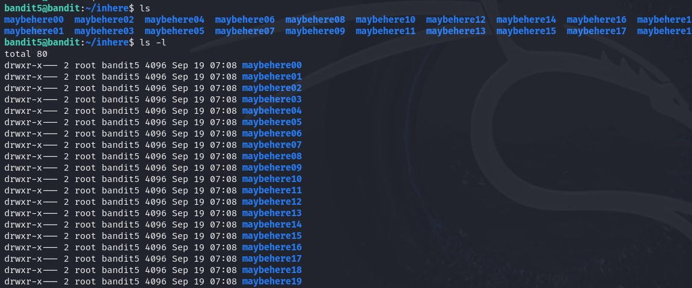
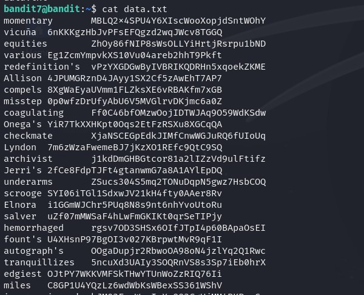

Level 5 - 9
Level 5 - File Contents
❓Description
The password for the next level is stored in the only human-readable file in the inhere directory. Tip: if your terminal is messed up, try the “reset” command.
üìîStudy
we study into file command:
- used to identify the type of file by examining its content rather than extension
- Displays a human-readable format (e.g., “ASCII text”) or a MIME type (e.g., “text/plain; charset=us-ascii”).
Since we are at file commands:

üí° Solution
In the description we are hinted on only human-readable file, we use file command
bandit4@bandit:~/inhere$ file ./*
./-file00: data
./-file01: data
./-file02: data
./-file03: data
./-file04: data
./-file05: data
./-file06: data
./-file07: ASCII text
./-file08: data
./-file09: data
Got it✅

Level 6 - A Specific File
❓Description
The password for the next level is stored somewhere on the server and has all of the following properties:
- owned by user bandit7
- owned by group bandit6
- 33 bytes in size
üìîStudy
find command is a very powerful tool provided by Linux, offering a wide array of options for searching files and directories
Now we look into the basic options that make this command powerful:
-name
Searches for files and directories matching a specific name pattern (case-sensitive).
üí°find . -name "example.txt"Searches the current and subdirectories for a file named “example.txt”.-iname
Case-insensitive version of “-name”
üí°find . -iname "example.txt": Searches for “example.txt” regardless of case.-type
Specifies the type of file to search for (e.g., f for regular files, d for directories).
üí°find . -type f: Finds all regular files in the current directory.-path
Searches for files or directories whose full path matches the pattern
üí°find /home -path "/home/user/documents/*": Searches for files in the /home/user/ documents directory.-size
Finds files of a specific size
üí°find . -size +10M: Finds all files larger than 10MB.-user
Finds files owned by a specific user.
üí°find . -user john: Finds all files owned by the user “john”.-group
Finds files belonging to a specific group.
üí°find . -group staff: Finds all files belonging to the group “staff”.-perm
Finds files with specific permissions. üí°find . -perm 755: Finds all files with read, write, and execute permissions for owner, group, and others.
üí° Solution
Let’s see what is in the directory

Since there is a lot of folders, it is not really feasible to cd into them one by one, let’s directly find

Found it! Just not sure why it says here owned by bandit5 but not 6 lol.
bandit5@bandit:~/inhere$ cat ./maybehere07/.file2
HWasnPhtq9AVKe0dmk45nxy20cvUa6EGLevel 7 - No Permission
❓Description
The password for the next level is stored somewhere on the server and has all of the following properties:
- owned by user bandit7
- owned by group bandit6
- 33 bytes in size
üìîStudy
We look into file permission, which is the fundamental concept in Linux system:
Take an example:
drwxr-xr-x 1 john staff 3771 Mar 31 2024 .bashrc
john (third column) - user
staff(forth column) - group
Breaking down d | rwx | r-x | r-x
dindicates filetypd - in this case d irectory. If for regular file isa- Permissions are groups into 3 bits each - user | group | other
- Permission glossary:
r: readablew: writablex: executable (basically an executable program)-: empty
üí° Solution
We try finding

Seems like there were a bunch of files across server fitting to the criteria, but we don’t have access…
. and find / ?Ans:
find . means you want to find files based on current directory;find / means you want to find from root directory.find *¬†means “start with the visible contents of the directory”. A depth of 0 will be each of the visible items in the directory.To remove the noise of Permission denied error, we append 2>/dev/null
This redirects any error messages (standard error stream) to /dev/null, effectively discarding them. This is useful for ignoring permission errors or other issues that might occur during the search.
What are the types of errors?
Ans: Every program we run on the command line automatically has three data streams connected to it.
- STDIN (0) - Standard input (data fed into the program)
- STDOUT (1) - Standard output (data printed by the program, defaults to the terminal)
- STDERR (2) - Standard error (for error messages, also defaults to the terminal)
Coming back
bandit6@bandit:~$ find / -type f -user bandit7 -group bandit6 -size 33c 2>/dev/null
/var/lib/dpkg/info/bandit7.password
bandit6@bandit:~$ cat /var/lib/dpkg/info/bandit7.password
morbNTDkSW6jIlUc0ymOdMaLnOlFVAaj
Level 8 - Find a word
❓Description
The password for the next level is stored in the file data.txt next to the word millionth
üìîStudy
How to find certain word/text in a file?
üëçüèºgrep commandüëçüèº
Example: grep "error" logfile.txt ➡ searches for lines containing “error” in logfile.txt
| Option | Key | Feature |
|---|---|---|
| Case-insensitive search | -i |
for case-insensitive searching |
| Recursive Search | -r |
searching recursively with directories |
| Line Number | -n |
to display the line number with matching line |
| Count Matches | -c |
count the number of matching lines |
| Invert Match | -v |
to display lines that don’t match the pattern |
| Exact Match | -w |
find exact word matches |
| Context | -A, -B, -C |
display lines before, after, or both around the matching line |
üí° Solution
We can see data.txt is wayyyy too large for us to search manually

use grep:
bandit7@bandit:~$ grep "millionth" data.txt
millionth dfwvzFQi4mU0wfNbFOe9RoWskMLg7eEc
Level 9 - Only once
❓Description
The password for the next level is stored in the file data.txt and is the only line of text that occurs only once
üìîStudy
The uniq command in Linux is used to filter out or report repeated lines in a file. It is commonly used in conjunction with the sort command because uniq only detects duplicate lines that are adjacent. Therefore, for the most effective use, lines should be sorted before using uniq.
üí° Solution

the -u only outputs lines that are unique in the input